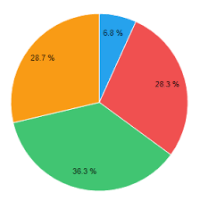

Os pets shops e clínicas veterinárias estabelecidos em Carapicuíba e que recebem e disponibilizam animais para
adoção precisarão contar, a partir de agora, com termo de adoção para cada animal que for destinado a um novo
lar. O “termo de adoção” deverá contar ainda com uma cópia do documento de identidade da pessoa que adotar o
animal. Os dois documentos poderão ser acessados, sempre que solicitado, pela pessoa que deixou o animal no pet
shop ou clínica para a adoção. É o que prevê a lei 2456, sancionada pelo prefeito Marcos Neves e que teve origem
projeto, aprovado na Câmara Municipal, de autoria do vereador Professor Ladenilson.

Para que o cachorro possa fazer compras, foi desenvolvido um sistema de reconhecimento facial e inteligência
artificial que capta o interesse do cão pelos brinquedos, bolinhas e pelúcias que forem apresentados na
plataforma. Se for detectada reação positiva, o item vai para o carrinho. Depois disso, cabe ao dono comprar ou
não o item escolhido pelo animal.